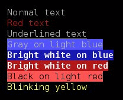

Information
This short tutorial demonstrates how to get up and running with colorized output using ANSI escape sequences. These escape sequences (or codes) are what allow for text-based colored output in a terminal. You've all seen this. The htop program (screenshot) is an excellent example. The latest GNU and Clang compilers now emit colored output to distinguish between normal messages, warnings, and errors.Here's a sample program with a warning and an error:
/* INT instead of int */
INT main(void)
{
int a; /* unused variable */
return 0;
}
This is from a later version (5.3.0):foo.c:1:1: error: unknown type name 'INT' foo.c: In function 'main': foo.c:3:6: warning: unused variable 'a' [-Wunused-variable]
A few simple examples using bash scripting that demonstrate the escape codes. (Just copy and paste them into a terminal).foo.c:1:1: error: unknown type name 'INT' INT main(void) ^ foo.c: In function 'main': foo.c:3:6: warning: unused variable 'a' [-Wunused-variable] int a; ^
The above lines will output like this (in a terminal that supports color):printf '\e[0mNormal text\e[m\n' printf '\e[31mRed text\e[m\n' printf '\e[4mUnderlined text\e[m\n' printf '\e[37;104mGray on light blue\e[m\n' printf '\e[1;37;44mBright white on blue\e[m\n' printf '\e[1;37;41mBright white on red\e[m\n' printf '\e[0;30;101mBlack on light red\e[m\n' printf '\e[5;93mBlinking yellow\e[m\n'
A note regarding blinking text:Normal text Red text Underlined text Gray on light blue Bright white on blue Bright white on red Black on light red
Here's an animated GIF that should show the blinking in any browser that supports them:All of the lines above (except the blinking yellow line) should display properly. This means you should see colored lines in your browser and in the terminal. Most browsers will not display the blinking text and there is a long history why that is. A notable exception is Opera, which is what I've used for about 15 years. (Although, it's getting old and has changed into Chrome, like most of the others.) You may not see the blinking in the terminal either, as it is a function of the terminal.

ANSI Escape Sequences (Details)
An escape sequence includes 3 integer values: an attribute, a foreground color, and a background color. If you don't provide one of the three values, the default will be used.The integer values and the text to display are surround by a pair of ESC characters, hence the name. So, the sequence to display text in bright white on a blue background is this:
Attributes Foreground color Background color
Since the ESC character is a non-printable character (ASCII decimal 27, hex 1B, octal 033), many times you will see it displayed as: ESC[ESC[1;37;44mBright white on blueESC[0m
So, the sequence ESC[1;37;44m specifies an attribute of 1 (bold/bright), a foreground color of 37 (gray), and background color of 44 (blue). The lowercase m terminates the ESC codes. Once these escape codes are sent to the terminal, any text that is displayed will be white on blue. To reset the terminal to its defaults, use the escape sequence: ESC[m
Using the table above, you should be able to display text in a variety of ways. To test your terminal, this simple bash script: (docolors) displays the escape sequences in every possible combination. To test it, save the file to your computer, make it executable:
and then run it:chmod +x docolors
This screenshot shows the partial output. The complete output is about 180 lines of colored text../docolors
Many scripts today are meant to run from a terminal (or terminal emulator), and so almost all scripting languages have support for ANSI escape sequences, or it is easy to add. The Bash scripting language is a very popluar one and you've just seen a snippet of code showing how bash scripts can enable colorized output. Of course, if a programming language can create a console application and write to the screen, then it will be able to manipulate the colored output.
There are a lot more details with regard to ANSI escape sequences that I'm not going to get into, such as clearing the screen or positioning the cursor. I'm just giving an introduction on how to get up and running with colors in your own console applications. Probably 95% of what you want to do can be done with the few techniques that I'm showing. If you want to learn all of the gory details, then Google is your friend.
Using ANSI Escape Sequences in a C Program
Of course, not all programs are written in a scripting language. We'll see how easy it is to do from C. If we can write to the screen (printf, anyone?), then we can output ANSI escape sequences as well. Let's convert this bash script:into a C program:printf '\e[0mNormal text\e[m\n' printf '\e[31mRed text\e[m\n' printf '\e[4mUnderlined text\e[m\n' printf '\e[37;104mGray on light blue\e[m\n' printf '\e[1;37;44mBright white on blue\e[m\n' printf '\e[1;37;41mBright white on red\e[m\n' printf '\e[0;30;101mBlack on light red\e[m\n' printf '\e[5;93mBlinking yellow\e[m\n'
#include <stdio.h> /* printf */
int main(void)
{
printf("\033[0mNormal text\033[0m\n");
printf("\033[31mRed text\033[0m\n");
printf("\033[4mUnderlined text\033[0m\n");
printf("\033[37;104mGray on light blue\033[0m\n");
printf("\033[1;37;44mBright white on blue\033[0m\n");
printf("\033[1;37;41mBright white on light red\033[0m\n");
printf("\033[5;93mBlinking yellow\033[0m\n");
return 0;
}
#include <iostream> /* cout, endl */
int main()
{
using std::cout;
using std::endl;
cout << "\033[0mNormal text\033[0m" << endl;
cout << "\033[31mRed text\033[0m" << endl;
cout << "\033[4mUnderlined text\033[0m" << endl;
cout << "\033[37;104mGray on light blue\033[0m" << endl;
cout << "\033[1;37;44mBright white on blue\033[0m" << endl;
cout << "\033[1;37;41mBright white on light red\033[0m" << endl;
cout << "\033[5;93mBlinking yellow\033[0m" << endl;
return 0;
}
Creating Helper Functions in C
Now that we know how to get colorized output, we need an easier way to do that. Having to remember and type in those cryptic codes is unacceptable for anything but toy programs. The very first thing we should do is to make some kind of #define or enum (enumeration) for all of those values.We'll put these in a header file called termcolors.h (Text). We'll also provide a few helper functions:
Attributes Foreground color Background color enum ColorAttribute { caNORMAL = 0, caBOLD = 1, caUNDERLINE = 4, caBLINKING = 5, caREVERSED = 7, caCONCEALED = 8 };enum ForegroundColor { fgBLACK = 30, fgRED = 31, fgGREEN = 32, fgORANGE = 33, fgBLUE = 34, fgPURPLE = 35, fgCYAN = 36, fgGREY = 37, fgGRAY = 37, fgDARKGREY = 90, fgDARKGRAY = 90, fgLIGHTRED = 91, fgLIGHTGREEN = 92, fgYELLOW = 93, fgLIGHTBLUE = 94, fgLIGHTPURPLE = 95, fgTURQUOISE = 96 };enum BackgroundColor { bgBLACK = 40, bgRED = 41, bgGREEN = 42, bgORANGE = 43, bgBLUE = 44, bgPURPLE = 45, bgCYAN = 46, bgGREY = 47, bgGRAY = 47, bgDARKGREY = 100, bgDARKGRAY = 100, bgLIGHTRED = 101, bgLIGHTGREEN = 102, bgYELLOW = 103, bgLIGHTBLUE = 104, bgLIGHTPURPLE = 105, bgTURQUOISE = 106 };
The first function simply sets up the terminal with the desired attribute and colors. The second one resets everything. The third function is just a demo, much like the bash script above. It allows you to write a one line program that will display all combinations of attributes, foreground colors, and background colors:void setcolors(int foreground, int background, int attribute); void resetcolors(void); void showcolors(void);
#include <stdio.h>
#include "termcolors.h"
int main(void)
{
/* Best on a wide display of at least 128 characters. */
showcolors();
return 0;
}
The implentation of the basic functions are trivial:
void setcolors(int foreground, int background, int attribute)
{
printf("\033[%i;%i;%im", attribute, foreground, background);
}
void resetcolors(void)
{
printf("\033[0m");
}
#include <stdio.h>
#include "termcolors.h"
int main(void)
{
setcolors(fgGREY, bgRED, caBOLD);
printf("Bold grey on red");
resetcolors();
printf("\n");
setcolors(fgYELLOW, bgBLUE, caNORMAL);
printf("Yellow on blue");
resetcolors();
printf("\n");
setcolors(fgCYAN, bgBLACK, caUNDERLINE);
printf("Underlined cyan on black");
resetcolors();
printf("\n");
return 0;
}
compile: gcc -Wall -Wextra -ansi -pedantic -O2 -g testcolors.c -c -o testcolors.o
compile: gcc -Wall -Wextra -ansi -pedantic -O2 -g termcolors.c -c -o termcolors.o
link: gcc testcolors.o termcolors.o -o testcolors
run: ./testcolors
In a nutshell, that's it. With these two very simple wrapper functions, you can pretty much display colorized output from any of your console applications. Of course, there are still a few things that we can do to simplify it even further.Bold grey on red Yellow on blue Underlined cyan on black
Creating a Static Library in C
Sometimes, it's easier to use a pre-compiled, static library with your application instead of the source code. There a many reasons why this is a good idea, but I'm not going to get into why it is. I'm just going to show you how to do it. Everyone knows how to compile the termcolors.c code:This will produce an object file named termcolors.o. Then, we compile our code (testcolors.c):gcc -Wall -Wextra -ansi -pedantic -O2 -g termcolors.c -c -o termcolors.o
The last step is to link the objects together to create the executable:gcc -Wall -Wextra -ansi -pedantic -O2 -g testcolors.c -c -o testcolors.o
However, rather than linking with the object file (termcolors.o), I'm going to create a static library and link with that instead. To create a static library from an object file:gcc testcolors.o termcolors.o -o testcolors
On Linux, a static library is sometimes called an archive. The ar command is an archiver, which is used to create static libraries (archives). The rc characters are command line options (but you don't use a minus sign in front). Their meanings:ar rc libtermcolors.a termcolors.o
Since the helper functions are really just a black box, all we need to do is include the header file, termcolors.h, in our code and we can build (with libtermcolors.a) any program that we create.gcc testcolors.c libtermcolors.a -o testcolors
Additional Helper Functions
You might be tempted to stop here and start using the library to colorize terminal output. However, even with these helper functions, it's still too tedious and error prone to use effectively. Not only that, but you are still "hard-coding" colors throughout the program.With these two functions:
we can build a bunch of other functions to streamline things. For example, let's say that we want to print messages in different colors based on their severity. We'll have 3 levels: informational, warning, and error.void setcolors(int foreground, int background, int attribute); void resetcolors(void);
This is the scheme:
void INFO(void)
{
setcolors(fgGRAY, bgBLACK, caNORMAL);
}
void WARNING(void)
{
setcolors(fgYELLOW, bgBLACK, caNORMAL);
}
void ERROR(void)
{
setcolors(fgRED, bgBLACK, caBOLD);
}
int main(void)
{
INFO();
printf("The weather today is going to be cold and clear.");
resetcolors();
printf("\n");
WARNING();
printf("The mountains may get up to a foot of snow by 8 pm.");
resetcolors();
printf("\n");
ERROR();
printf("Unable to contact the weather station. (ERR:C7560)");
resetcolors();
printf("\n");
return 0;
}
A big advantage of this over "hard-coding" colors into your code is flexibility. Suppose that you now decide that you want the error messages to stand out more. To do that, you can print bold gray (bright white) on red. You just have to edit this function:The weather today is going to be cold and clear. The mountains may get up to a foot of snow by 8 pm. Unable to contact the weather station. (ERR:C7560)
void ERROR(void)
{
setcolors(fgGRAY, bgRED, caBOLD);
}
This is a good start, but let's take it a step further and create our own custom version of printf. We'll create a single function that does both the printing and the colorization. I'll call the function printfc for printf colored. The function printf is short for print formatted, so this function is really print formatted color. This is the prototype:The weather today is going to be cold and clear. The mountains may get up to a foot of snow by 8 pm. Unable to contact the weather station. (ERR:C7560)
Like printf, it's a variadic function.int printfc(int foreground, int background, int attribute, const char *format, ...);
This is the implementation:
int printfc(int fg, int bg, int attr, const char *format, ...)
{
int count; // characters printed (like printf)
va_list args; // list of args from ...
va_start(args, format); // find args
setcolors(fg, bg, attr); // change the colors
count = vprintf(format, args); // do the printing
va_end(args); // done
resetcolors(); // reset the colors
printf("\n"); // should the user do this?
return count; // mimic printf
}
and the output will look something like this: The error code is: 7560.int code = 7560; // To demonstrate variadic function printfc(fgGRAY, bgRED, caBOLD, "The error code is: %i.", code);
Now, let's combine both techniques to create shortcuts for printing based on the category (INFO/WARNING/ERROR):
void INFO(const char *format, ...)
{
va_list args;
va_start(args, format);
printfc(fgGRAY, bgBLACK, caNORMAL, format, args);
va_end(args);
}
void WARNING(const char *format, ...)
{
va_list args;
va_start(args, format);
printfc(fgYELLOW, bgBLACK, caNORMAL, format, args);
va_end(args);
}
void ERROR(const char *format, ...)
{
va_list args;
va_start(args, format);
printfc(fgGRAY, bgRED, caBOLD, format, args);
va_end(args);
}
int main(void)
{
int code = 7560; // To demonstrate variadic function
INFO("The weather today is going to be cold and clear.");
WARNING("The mountains may get up to a foot of snow by 8 pm.");
ERROR("Unable to contact the weather station. (ERR:C%i)", code);
return 0;
}
This is just a sample of some of the ways you can extend the functionality. There are virtually unlimited ways you can set this up.The weather today is going to be cold and clear. The mountains may get up to a foot of snow by 8 pm. Unable to contact the weather station. (ERR:C7560)
If you are unfamiliar with variadic functions, you can find a short reference/tutorial that I wrote here.
Reference for the vprintf family of functions.
Summary
This has been a brief introduction to colorizing your console/terminal output using ANSI escape codes (sequences). The goal was to just get you familiar with this so that you can take it to the next level.Other points to note:
void ERROR(const char *format, ...)
{
va_list args;
va_start(args, format);
if (COLORS_ENABLED)
printfc(fgGRAY, bgRED, caBOLD, format, args);
else
printf(format, args);
va_end(args);
}
into the console. For an overwhelming amount of information, type this:man tput
and be thankful you don't need to know it all!man terminfo
One popular terminal is konsole in KDE and it supports blinking. I've found that yakuake (another good terminal) and xterm also support it. Neither gnome-terminal nor Terminator support blinking, although these are two very popular terminal programs. Some terminal programs may support it, but may disabled it by default. On such terminals, you need to find out how to enable it.printf '\e[5m Blink Text\e[m\n'
Some links that you might find useful: